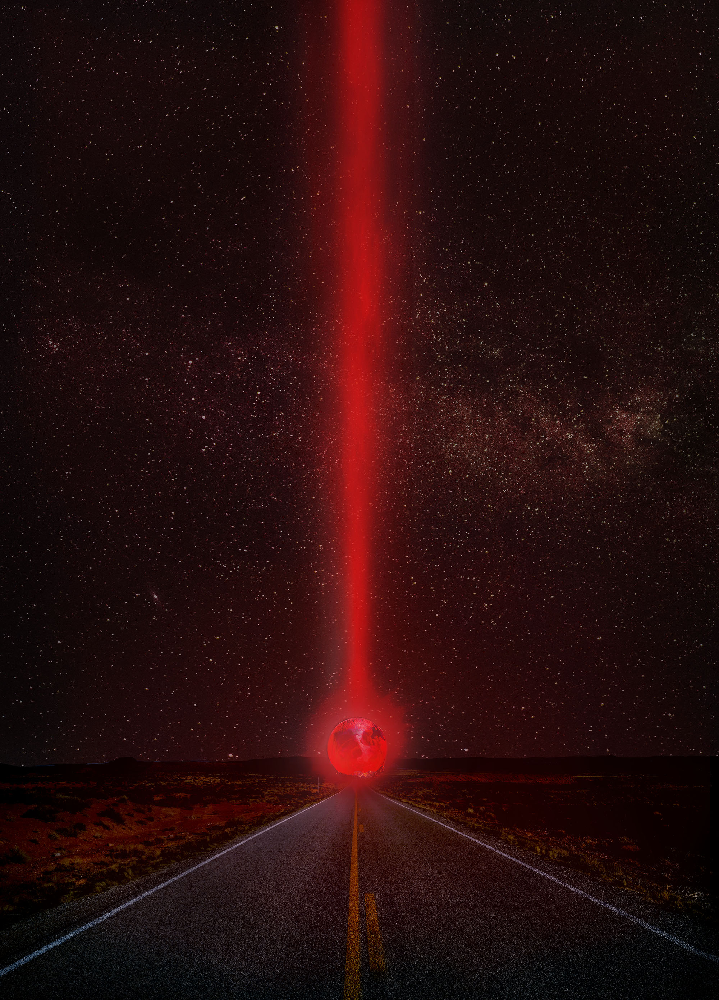
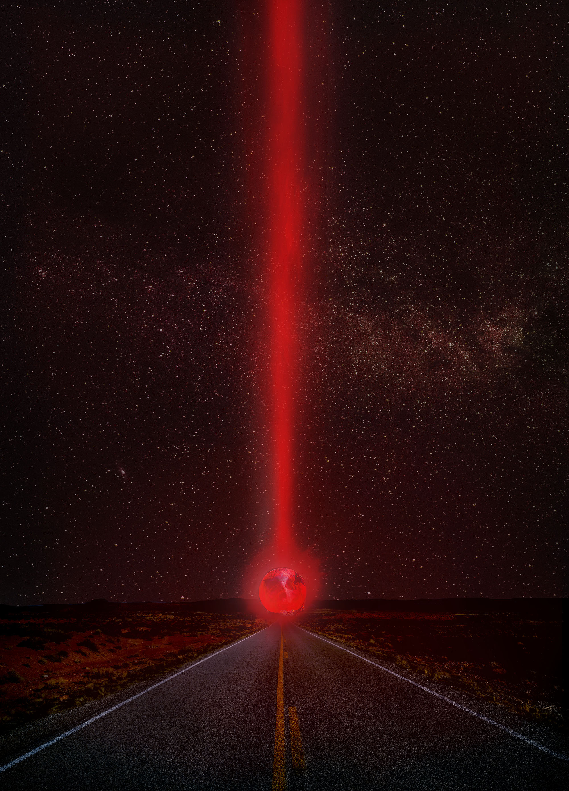
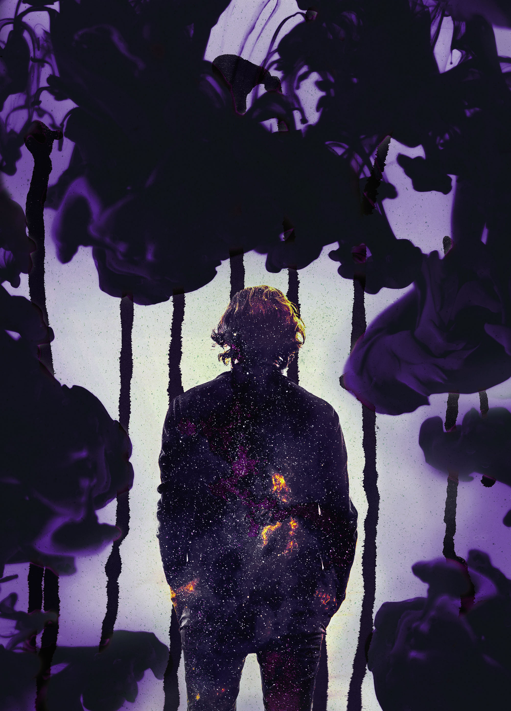
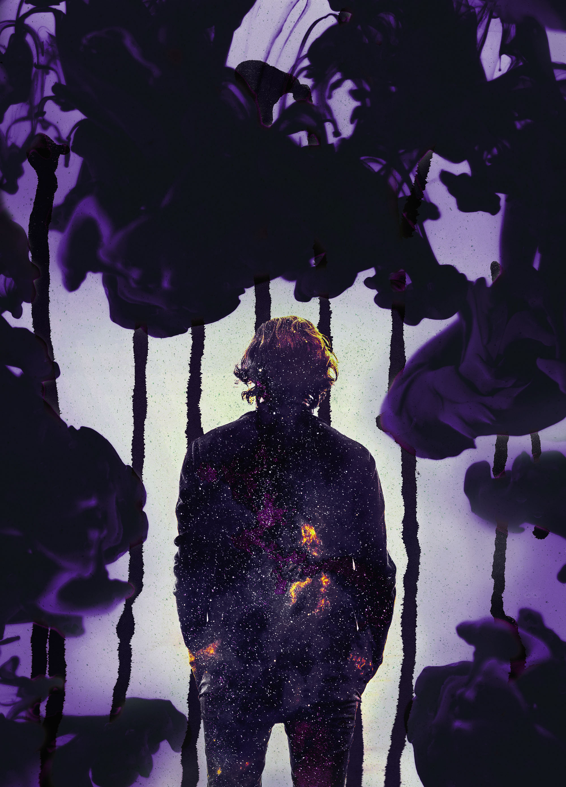

 


Marketing material for a fictional Sci-Fi movie.
For this project I had to create a movie concept from scratch. I wrote a simple outline and created visuals from there.
The visual material was created with a combination of free-to-use photographs and my own material. I played with my own ink textures and combined these with suitable images to create a mysterious atmosphere. The logo was created in Adobe Illustrator. The posters were created using a combination of Adobe Photoshop and Adobe Indesign.
This project was quite challenging at the time, since it was my first design challenge of this scale. I think it turned into a nice showcase of my design sensibilities. It shows my affinity for storytelling and how I like to combine analogue techniques with digital material.
Creating the appropriate atmosphere for each design is key.